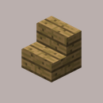
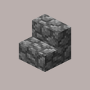

stairs
 
Description
Stairs are a block that allows mobs and players to change elevation without jumping. Stairs can be crafted, or can be found in villages, strongholds, and nether fortresses. Wood stairs drops themselves as items when broken with any tool, or with no tool, but an axe is fastest. Non-wood stairs drop themselves as items only if broken with a pickaxe.